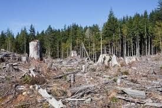
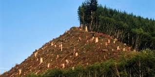
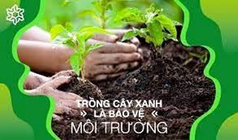
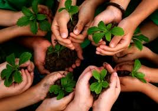

Báo cáo của Dự án Giám sát rừng toàn cầu (Global Forest Watch - GFW) công bố ngày 28/4 cho thấy các khu rừng nguyên vẹn trên thế giới tiếp tục bị phá hủy vào năm 2021, mặc dù hơn 100 quốc gia tại Hội nghị COP26 đã cam kết chấm dứt nạn phá rừng trong thập kỷ. Theo Viện Tài nguyên Thế giới (WRI), năm 2021 có khoảng 253.000 km² rừng đã bị phá huỷ.



